Add a project section: states at 1280 and 400 px
Disposable pictures from a throwaway build of origin/main d973876 plus the proposed change, on an isolated Paseo with fake op/security. Proposed-design pictures: preview-*.png.
Today (main d973876): Paseo has no project
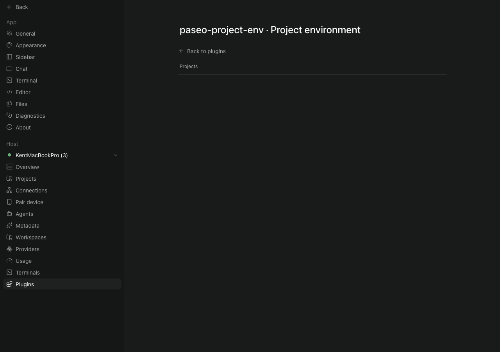
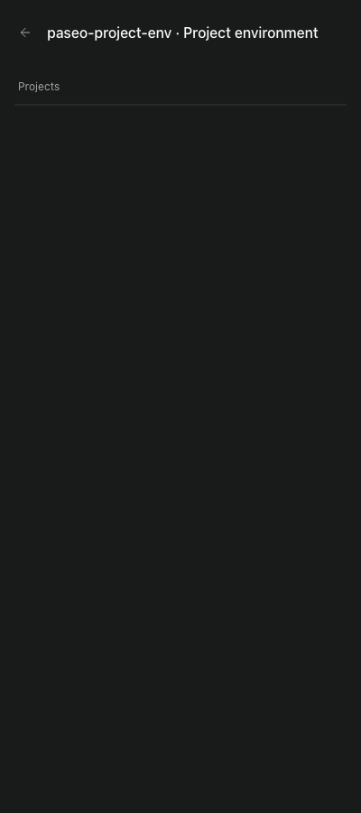
1. Paseo has no project
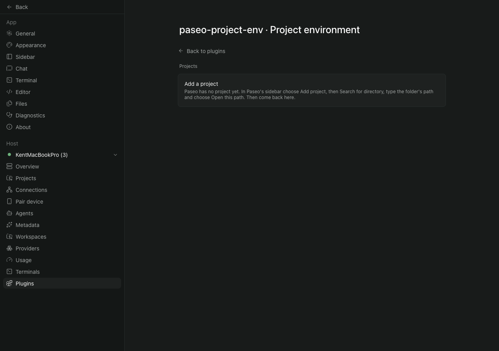
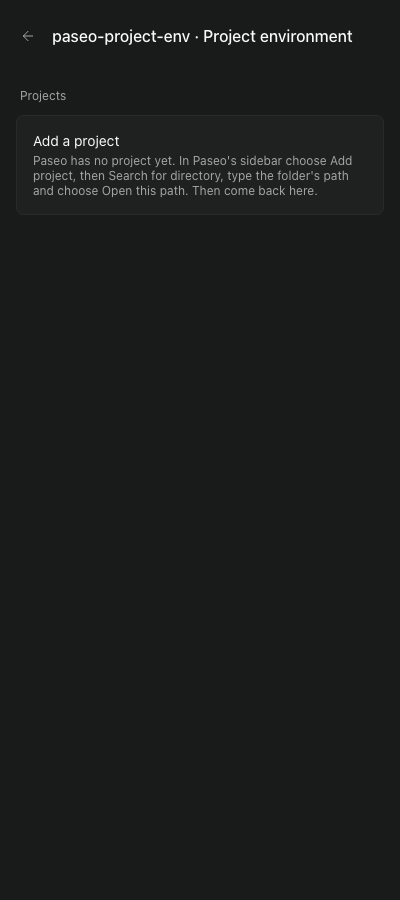
2. Every project already configured
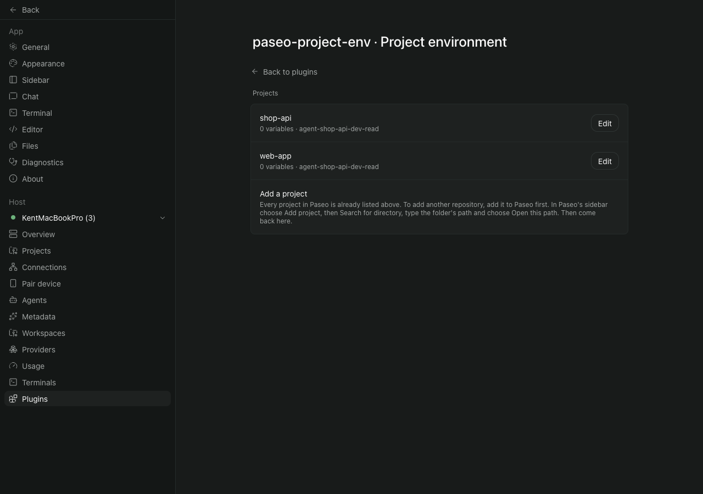
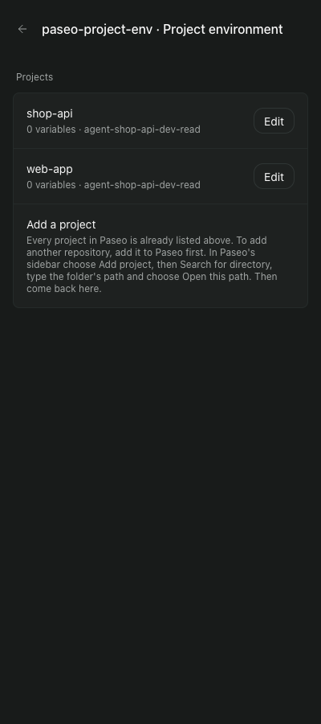
3. The project list fails
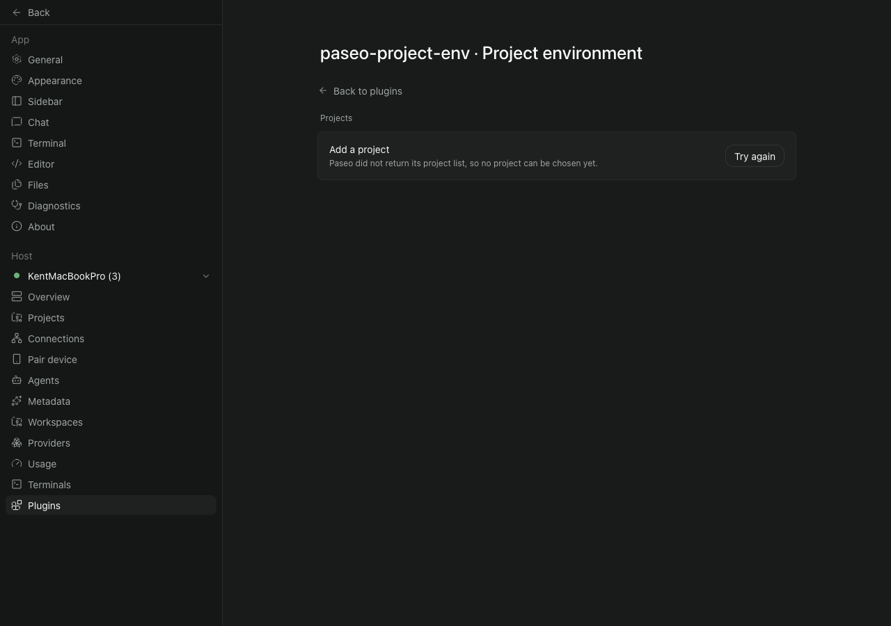
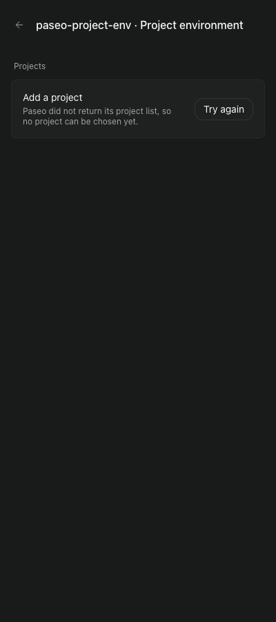
4. One unconfigured project (select unchanged)
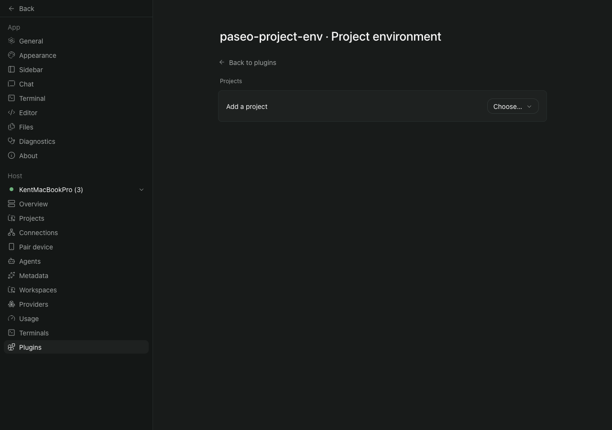

5. The project list fails with one project configured above
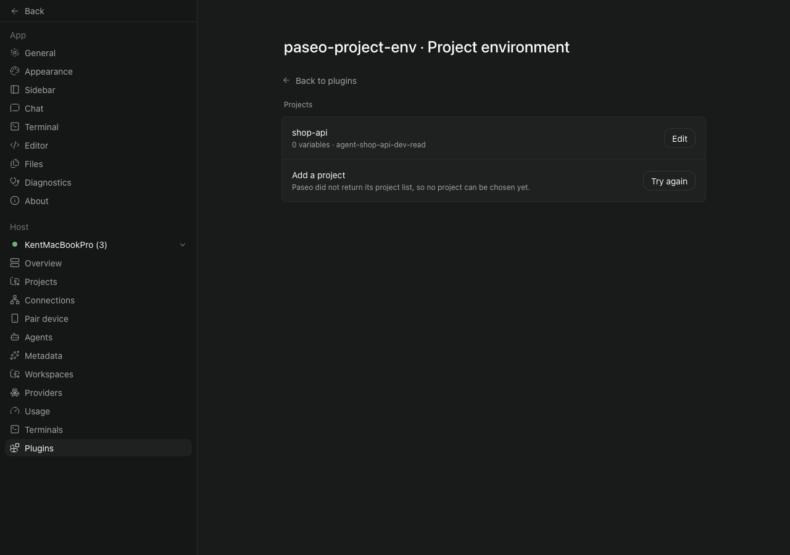
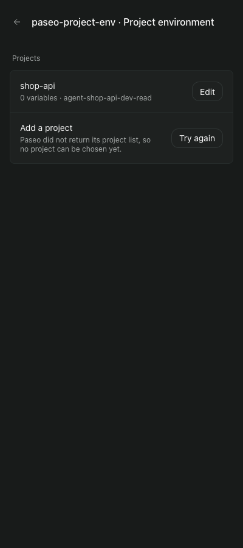
Extra: while the list loads, 1280
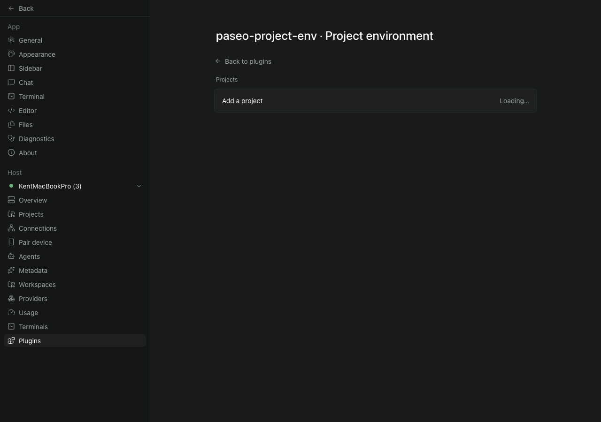
Extra: Try again pressed while still failing (loading line), 1280
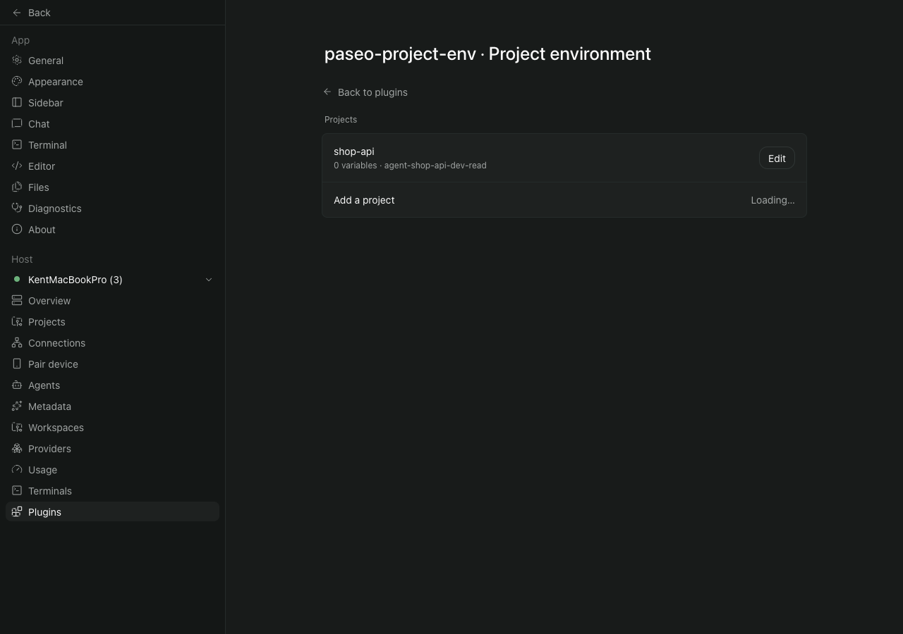
Extra: Try again pressed while still failing (loading line), 400
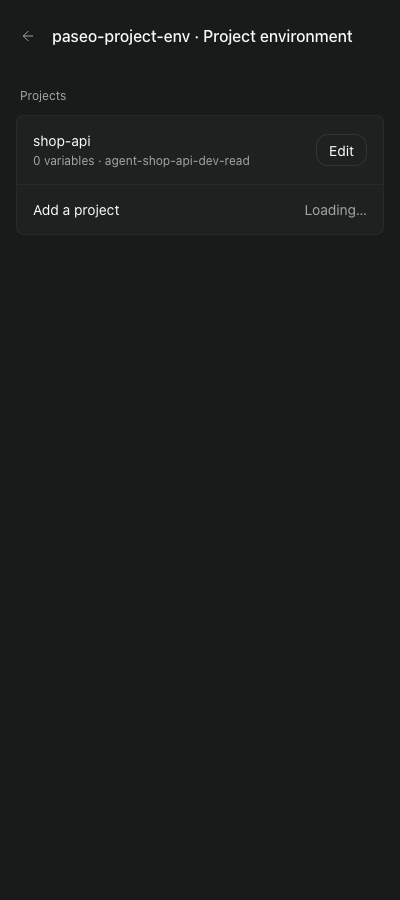
Extra: after Try again succeeds, 400
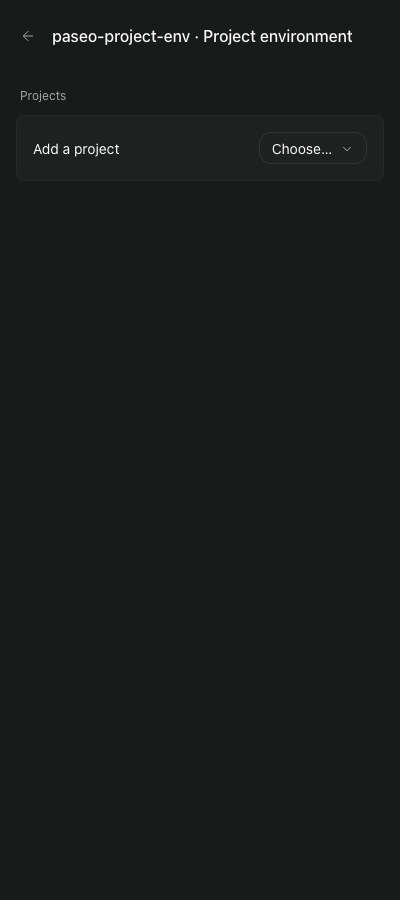